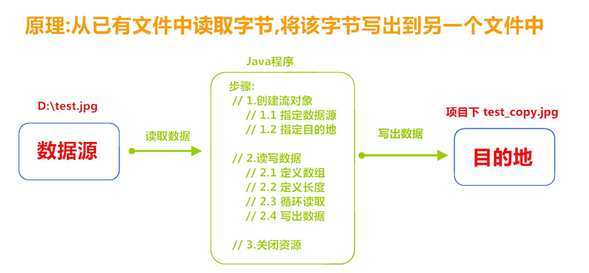

主要总结IO流等相关的知识🤪
主要内容
- IO流
- 字节流
- 字符流
- 缓冲流
- 转换流
- 序列化流
- 打印流
第一章 IO概述
1.1 什么是IO
生活中，你肯定经历过这样的场景。当你编辑一个文本文件，忘记了ctrl+s ，可能文件就白白编辑了。当你电脑上插入一个U盘，可以把一个视频，拷贝到你的电脑硬盘里。那么数据都是在哪些设备上的呢？键盘、内存、硬盘、外接设备等等。
我们把这种数据的传输，可以看做是一种数据的流动，按照流动的方向，以内存为基准，分为输入input 和输出output ，即流向内存是输入流，流出内存的输出流。
Java中I/O操作主要是指使用java.io包下的内容，进行输入、输出操作。输入也叫做读取数据，输出也叫做作写出数据。
1.2 IO的分类
根据数据的流向分为：输入流和输出流。
- 输入流 ：把数据从
其他设备上读取到内存中的流。 - 输出流 ：把数据从
内存中写出到其他设备上的流。
格局数据的类型分为：字节流和字符流。
- 字节流 ：以字节为单位，读写数据的流。
- 字符流 ：以字符为单位，读写数据的流。
1.3 IO的流向说明图解

1.4 顶级父类们
| 输入流 | 输出流 | |
|---|---|---|
| 字节流 | 字节输入流 InputStream |
字节输出流 OutputStream |
| 字符流 | 字符输入流 Reader |
字符输出流 Writer |
第二章 字节流
2.1 一切皆为字节
一切文件数据（文本、图片、视频等）在存储时，都是以二进制数字的形式保存，都一个一个的字节，那么传输时一样如此。所以，字节流可以传输任意文件数据。在操作流的时候，我们要时刻明确，无论使用什么样的流对象，底层传输的始终为二进制数据。
2.2 字节输出流【OutputStream】
java.io.OutputStream抽象类是表示字节输出流的所有类的超类，将指定的字节信息写出到目的地。它定义了字节输出流的基本共性功能方法。
public void close()：关闭此输出流并释放与此流相关联的任何系统资源。public void flush()：刷新此输出流并强制任何缓冲的输出字节被写出。public void write(byte[] b)：将 b.length字节从指定的字节数组写入此输出流。public void write(byte[] b, int off, int len)：从指定的字节数组写入 len字节，从偏移量 off开始输出到此输出流。public abstract void write(int b)：将指定的字节输出流。
小贴士：
close方法，当完成流的操作时，必须调用此方法，释放系统资源。
2.3 FileOutputStream类
OutputStream有很多子类，我们从最简单的一个子类开始。
java.io.FileOutputStream类是文件输出流，用于将数据写出到文件。
构造方法
public FileOutputStream(File file)：创建文件输出流以写入由指定的 File对象表示的文件。public FileOutputStream(String name)： 创建文件输出流以指定的名称写入文件。
当你创建一个流对象时，必须传入一个文件路径。该路径下，如果没有这个文件，会创建该文件。如果有这个文件，会清空这个文件的数据。
- 构造举例，代码如下：
public class FileOutputStreamConstructor throws IOException {
public static void main(String[] args) {
// 使用File对象创建流对象
File file = new File("a.txt");
FileOutputStream fos = new FileOutputStream(file);
// 使用文件名称创建流对象
FileOutputStream fos = new FileOutputStream("b.txt");
}
}写出字节数据
- 写出字节：
write(int b)方法，每次可以写出一个字节数据，代码使用演示：
public class FOSWrite {
public static void main(String[] args) throws IOException {
// 使用文件名称创建流对象
FileOutputStream fos = new FileOutputStream("fos.txt");
// 写出数据
fos.write(97); // 写出第1个字节
fos.write(98); // 写出第2个字节
fos.write(99); // 写出第3个字节
// 关闭资源
fos.close();
}
}
输出结果：
abc小贴士：
- 虽然参数为int类型四个字节，但是只会保留一个字节的信息写出。
- 流操作完毕后，必须释放系统资源，调用close方法，千万记得。
- 写出字节数组：
write(byte[] b)，每次可以写出数组中的数据，代码使用演示：
public class FOSWrite {
public static void main(String[] args) throws IOException {
// 使用文件名称创建流对象
FileOutputStream fos = new FileOutputStream("fos.txt");
// 字符串转换为字节数组
byte[] b = "程序员".getBytes();
// 写出字节数组数据
fos.write(b);
// 关闭资源
fos.close();
}
}
输出结果：
程序员- 写出指定长度字节数组：
write(byte[] b, int off, int len),每次写出从off索引开始，len个字节，代码使用演示：
public class FOSWrite {
public static void main(String[] args) throws IOException {
// 使用文件名称创建流对象
FileOutputStream fos = new FileOutputStream("fos.txt");
// 字符串转换为字节数组
byte[] b = "abcde".getBytes();
// 写出从索引2开始，2个字节。索引2是c，两个字节，也就是cd。
fos.write(b,2,2);
// 关闭资源
fos.close();
}
}
输出结果：
cd数据追加续写
经过以上的演示，每次程序运行，创建输出流对象，都会清空目标文件中的数据。如何保留目标文件中数据，还能继续添加新数据呢？
public FileOutputStream(File file, boolean append)： 创建文件输出流以写入由指定的 File对象表示的文件。public FileOutputStream(String name, boolean append)： 创建文件输出流以指定的名称写入文件。
这两个构造方法，参数中都需要传入一个boolean类型的值，true 表示追加数据，false 表示清空原有数据。这样创建的输出流对象，就可以指定是否追加续写了，代码使用演示：
public class FOSWrite {
public static void main(String[] args) throws IOException {
// 使用文件名称创建流对象
FileOutputStream fos = new FileOutputStream("fos.txt"，true);
// 字符串转换为字节数组
byte[] b = "abcde".getBytes();
// 写出从索引2开始，2个字节。索引2是c，两个字节，也就是cd。
fos.write(b);
// 关闭资源
fos.close();
}
}
文件操作前：cd
文件操作后：cdabcde写出换行
Windows系统里，换行符号是\r\n 。代码使用演示：
public class FOSWrite {
public static void main(String[] args) throws IOException {
// 使用文件名称创建流对象
FileOutputStream fos = new FileOutputStream("fos.txt");
// 定义字节数组
byte[] words = {97,98,99,100,101};
// 遍历数组
for (int i = 0; i < words.length; i++) {
// 写出一个字节
fos.write(words[i]);
// 写出一个换行, 换行符号转成数组写出
fos.write("\r\n".getBytes());
}
// 关闭资源
fos.close();
}
}
输出结果：
a
b
c
d
e
- 回车符
\r和换行符\n：
- 回车符：回到一行的开头（return）。
- 换行符：下一行（newline）。
- 系统中的换行：
- Windows系统里，每行结尾是
回车+换行，即\r\n；- Unix系统里，每行结尾只有
换行，即\n；- Mac系统里，每行结尾是
回车，即\r。从 Mac OS X开始与Linux统一。
2.4 字节输入流【InputStream】
java.io.InputStream抽象类是表示字节输入流的所有类的超类，可以读取字节信息到内存中。它定义了字节输入流的基本共性功能方法。
public void close()：关闭此输入流并释放与此流相关联的任何系统资源。public abstract int read()： 从输入流读取数据的下一个字节。public int read(byte[] b)： 从输入流中读取一些字节数，并将它们存储到字节数组 b中 。
小贴士：
close方法，当完成流的操作时，必须调用此方法，释放系统资源。
2.5 FileInputStream类
java.io.FileInputStream类是文件输入流，从文件中读取字节。
构造方法
FileInputStream(File file)： 通过打开与实际文件的连接来创建一个 FileInputStream ，该文件由文件系统中的 File对象 file命名。FileInputStream(String name)： 通过打开与实际文件的连接来创建一个 FileInputStream ，该文件由文件系统中的路径名 name命名。
当你创建一个流对象时，必须传入一个文件路径。该路径下，如果没有该文件,会抛出FileNotFoundException 。
- 构造举例，代码如下：
public class FileInputStreamConstructor throws IOException{
public static void main(String[] args) {
// 使用File对象创建流对象
File file = new File("a.txt");
FileInputStream fos = new FileInputStream(file);
// 使用文件名称创建流对象
FileInputStream fos = new FileInputStream("b.txt");
}
}读取字节数据
- 读取字节：
read方法，每次可以读取一个字节的数据，提升为int类型，读取到文件末尾，返回-1，代码使用演示：
public class FISRead {
public static void main(String[] args) throws IOException{
// 使用文件名称创建流对象
FileInputStream fis = new FileInputStream("read.txt");
// 读取数据，返回一个字节
int read = fis.read();
System.out.println((char) read);
read = fis.read();
System.out.println((char) read);
read = fis.read();
System.out.println((char) read);
read = fis.read();
System.out.println((char) read);
read = fis.read();
System.out.println((char) read);
// 读取到末尾,返回-1
read = fis.read();
System.out.println( read);
// 关闭资源
fis.close();
}
}
输出结果：
a
b
c
d
e
-1循环改进读取方式，代码使用演示：
public class FISRead {
public static void main(String[] args) throws IOException{
// 使用文件名称创建流对象
FileInputStream fis = new FileInputStream("read.txt");
// 定义变量，保存数据
int b ；
// 循环读取
while ((b = fis.read())!=-1) {
System.out.println((char)b);
}
// 关闭资源
fis.close();
}
}
输出结果：
a
b
c
d
e小贴士：
- 虽然读取了一个字节，但是会自动提升为int类型。
- 流操作完毕后，必须释放系统资源，调用close方法，千万记得。
- 使用字节数组读取：
read(byte[] b)，每次读取b的长度个字节到数组中，返回读取到的有效字节个数，读取到末尾时，返回-1，代码使用演示：
public class FISRead {
public static void main(String[] args) throws IOException{
// 使用文件名称创建流对象.
FileInputStream fis = new FileInputStream("read.txt"); // 文件中为abcde
// 定义变量，作为有效个数
int len ；
// 定义字节数组，作为装字节数据的容器
byte[] b = new byte[2];
// 循环读取
while (( len= fis.read(b))!=-1) {
// 每次读取后,把数组变成字符串打印
System.out.println(new String(b));
}
// 关闭资源
fis.close();
}
}
输出结果：
ab
cd
ed错误数据d，是由于最后一次读取时，只读取一个字节e，数组中，上次读取的数据没有被完全替换，所以要通过len ，获取有效的字节，代码使用演示：
public class FISRead {
public static void main(String[] args) throws IOException{
// 使用文件名称创建流对象.
FileInputStream fis = new FileInputStream("read.txt"); // 文件中为abcde
// 定义变量，作为有效个数
int len ；
// 定义字节数组，作为装字节数据的容器
byte[] b = new byte[2];
// 循环读取
while (( len= fis.read(b))!=-1) {
// 每次读取后,把数组的有效字节部分，变成字符串打印
System.out.println(new String(b，0，len));// len 每次读取的有效字节个数
}
// 关闭资源
fis.close();
}
}
输出结果：
ab
cd
e小贴士：
使用数组读取，每次读取多个字节，减少了系统间的IO操作次数，从而提高了读写的效率，建议开发中使用。
2.6 字节流练习：图片复制
复制原理图解

案例实现
复制图片文件，代码使用演示：
public class Copy {
public static void main(String[] args) throws IOException {
// 1.创建流对象
// 1.1 指定数据源
FileInputStream fis = new FileInputStream("D:\\test.jpg");
// 1.2 指定目的地
FileOutputStream fos = new FileOutputStream("test_copy.jpg");
// 2.读写数据
// 2.1 定义数组
byte[] b = new byte[1024];
// 2.2 定义长度
int len;
// 2.3 循环读取
while ((len = fis.read(b))!=-1) {
// 2.4 写出数据
fos.write(b, 0 , len);
}
// 3.关闭资源
fos.close();
fis.close();
}
}小贴士：
流的关闭原则：先开后关，后开先关。
第三章 字符流
当使用字节流读取文本文件时，可能会有一个小问题。就是遇到中文字符时，可能不会显示完整的字符，那是因为一个中文字符可能占用多个字节存储。所以Java提供一些字符流类，以字符为单位读写数据，专门用于处理文本文件。
3.1 字符输入流【Reader】
java.io.Reader抽象类是表示用于读取字符流的所有类的超类，可以读取字符信息到内存中。它定义了字符输入流的基本共性功能方法。
public void close()：关闭此流并释放与此流相关联的任何系统资源。public int read()： 从输入流读取一个字符。public int read(char[] cbuf)： 从输入流中读取一些字符，并将它们存储到字符数组 cbuf中 。
3.2 FileReader类
java.io.FileReader类是读取字符文件的便利类。构造时使用系统默认的字符编码和默认字节缓冲区。
小贴士：
字符编码：字节与字符的对应规则。Windows系统的中文编码默认是GBK编码表。
idea中UTF-8
字节缓冲区：一个字节数组，用来临时存储字节数据。
构造方法
FileReader(File file)： 创建一个新的 FileReader ，给定要读取的File对象。FileReader(String fileName)： 创建一个新的 FileReader ，给定要读取的文件的名称。
当你创建一个流对象时，必须传入一个文件路径。类似于FileInputStream 。
- 构造举例，代码如下：
public class FileReaderConstructor throws IOException{
public static void main(String[] args) {
// 使用File对象创建流对象
File file = new File("a.txt");
FileReader fr = new FileReader(file);
// 使用文件名称创建流对象
FileReader fr = new FileReader("b.txt");
}
}读取字符数据
- 读取字符：
read方法，每次可以读取一个字符的数据，提升为int类型，读取到文件末尾，返回-1，循环读取，代码使用演示：public class FRRead { public static void main(String[] args) throws IOException { // 使用文件名称创建流对象 FileReader fr = new FileReader("read.txt"); // 定义变量，保存数据 int b ； // 循环读取 while ((b = fr.read())!=-1) { System.out.println((char)b); } // 关闭资源 fr.close(); } } 输出结果： 程 序 员
小贴士：虽然读取了一个字符，但是会自动提升为int类型。
- 使用字符数组读取：
read(char[] cbuf)，每次读取b的长度个字符到数组中，返回读取到的有效字符个数，读取到末尾时，返回-1，代码使用演示：
public class FRRead {
public static void main(String[] args) throws IOException {
// 使用文件名称创建流对象
FileReader fr = new FileReader("read.txt");
// 定义变量，保存有效字符个数
int len ；
// 定义字符数组，作为装字符数据的容器
char[] cbuf = new char[2];
// 循环读取
while ((len = fr.read(cbuf))!=-1) {
System.out.println(new String(cbuf));
}
// 关闭资源
fr.close();
}
}
输出结果：
程序
员序获取有效的字符改进，代码使用演示：
public class FISRead {
public static void main(String[] args) throws IOException {
// 使用文件名称创建流对象
FileReader fr = new FileReader("read.txt");
// 定义变量，保存有效字符个数
int len ；
// 定义字符数组，作为装字符数据的容器
char[] cbuf = new char[2];
// 循环读取
while ((len = fr.read(cbuf))!=-1) {
System.out.println(new String(cbuf,0,len));
}
// 关闭资源
fr.close();
}
}
输出结果：
程序
员3.3 字符输出流【Writer】
java.io.Writer抽象类是表示用于写出字符流的所有类的超类，将指定的字符信息写出到目的地。它定义了字节输出流的基本共性功能方法。
void write(int c)写入单个字符。void write(char[] cbuf)写入字符数组。abstract void write(char[] cbuf, int off, int len)写入字符数组的某一部分,off数组的开始索引,len写的字符个数。void write(String str)写入字符串。void write(String str, int off, int len)写入字符串的某一部分,off字符串的开始索引,len写的字符个数。void flush()刷新该流的缓冲。void close()关闭此流，但要先刷新它。
3.4 FileWriter类
java.io.FileWriter类是写出字符到文件的便利类。构造时使用系统默认的字符编码和默认字节缓冲区。
构造方法
FileWriter(File file)： 创建一个新的 FileWriter，给定要读取的File对象。FileWriter(String fileName)： 创建一个新的 FileWriter，给定要读取的文件的名称。
当你创建一个流对象时，必须传入一个文件路径，类似于FileOutputStream。
- 构造举例，代码如下：
public class FileWriterConstructor {
public static void main(String[] args) throws IOException {
// 使用File对象创建流对象
File file = new File("a.txt");
FileWriter fw = new FileWriter(file);
// 使用文件名称创建流对象
FileWriter fw = new FileWriter("b.txt");
}
}基本写出数据
写出字符：write(int b) 方法，每次可以写出一个字符数据，代码使用演示：
public class FWWrite {
public static void main(String[] args) throws IOException {
// 使用文件名称创建流对象
FileWriter fw = new FileWriter("fw.txt");
// 写出数据
fw.write(97); // 写出第1个字符
fw.write('b'); // 写出第2个字符
fw.write('C'); // 写出第3个字符
fw.write(30000); // 写出第4个字符，中文编码表中30000对应一个汉字。
/*
【注意】关闭资源时,与FileOutputStream不同。
如果不关闭,数据只是保存到缓冲区，并未保存到文件。
*/
// fw.close();
}
}
输出结果：
abC田小贴士：
- 虽然参数为int类型四个字节，但是只会保留一个字符的信息写出。
- 未调用close方法，数据只是保存到了缓冲区，并未写出到文件中。
关闭和刷新
因为内置缓冲区的原因，如果不关闭输出流，无法写出字符到文件中。但是关闭的流对象，是无法继续写出数据的。如果我们既想写出数据，又想继续使用流，就需要flush 方法了。
flush：刷新缓冲区，流对象可以继续使用。close:先刷新缓冲区，然后通知系统释放资源。流对象不可以再被使用了。
代码使用演示：
public class FWWrite {
public static void main(String[] args) throws IOException {
// 使用文件名称创建流对象
FileWriter fw = new FileWriter("fw.txt");
// 写出数据，通过flush
fw.write('刷'); // 写出第1个字符
fw.flush();
fw.write('新'); // 继续写出第2个字符，写出成功
fw.flush();
// 写出数据，通过close
fw.write('关'); // 写出第1个字符
fw.close();
fw.write('闭'); // 继续写出第2个字符,【报错】java.io.IOException: Stream closed
fw.close();
}
}小贴士：即便是flush方法写出了数据，操作的最后还是要调用close方法，释放系统资源。
写出其他数据
- 写出字符数组 ：
write(char[] cbuf)和write(char[] cbuf, int off, int len)，每次可以写出字符数组中的数据，用法类似FileOutputStream，代码使用演示：
public class FWWrite {
public static void main(String[] args) throws IOException {
// 使用文件名称创建流对象
FileWriter fw = new FileWriter("fw.txt");
// 字符串转换为字节数组
char[] chars = "Java程序员".toCharArray();
// 写出字符数组
fw.write(chars); // Java程序员
// 写出从索引2开始，2个字节。索引2是'程'，两个字节，也就是'程序'。
fw.write(b,2,2); // 程序
// 关闭资源
fos.close();
}
}- 写出字符串：
write(String str)和write(String str, int off, int len)，每次可以写出字符串中的数据，更为方便，代码使用演示：
public class FWWrite {
public static void main(String[] args) throws IOException {
// 使用文件名称创建流对象
FileWriter fw = new FileWriter("fw.txt");
// 字符串
String msg = "Java程序员";
// 写出字符数组
fw.write(msg); //Java程序员
// 写出从索引2开始，2个字节。索引2是'程'，两个字节，也就是'程序'。
fw.write(msg,2,2); // 程序
// 关闭资源
fos.close();
}
}- 续写和换行：操作类似于FileOutputStream。
public class FWWrite {
public static void main(String[] args) throws IOException {
// 使用文件名称创建流对象，可以续写数据
FileWriter fw = new FileWriter("fw.txt"，true);
// 写出字符串
fw.write("Java");
// 写出换行
fw.write("\r\n");
// 写出字符串
fw.write("程序员");
// 关闭资源
fw.close();
}
}
输出结果:
Java
程序员小贴士：字符流，只能操作文本文件，不能操作图片，视频等非文本文件。
当我们单纯读或者写文本文件时 使用字符流 其他情况使用字节流
第四章 缓冲流
学习了基本的一些流，作为IO流的入门，今天我们要见识一些更强大的流。比如能够高效读写的缓冲流，能够转换编码的转换流，能够持久化存储对象的序列化流等等。这些功能更为强大的流，都是在基本的流对象基础之上创建而来的，就像穿上铠甲的武士一样，相当于是对基本流对象的一种增强。
4.1 概述
缓冲流,也叫高效流，是对4个基本的FileXxx 流的增强，所以也是4个流，按照数据类型分类：
- 字节缓冲流：
BufferedInputStream，BufferedOutputStream - 字符缓冲流：
BufferedReader，BufferedWriter
缓冲流的基本原理，是在创建流对象时，会创建一个内置的默认大小的缓冲区数组，通过缓冲区读写，减少系统IO次数，从而提高读写的效率。
4.2 字节缓冲流
构造方法
public BufferedInputStream(InputStream in)：创建一个 新的缓冲输入流。public BufferedOutputStream(OutputStream out)： 创建一个新的缓冲输出流。
构造举例，代码如下：
// 创建字节缓冲输入流
BufferedInputStream bis = new BufferedInputStream(new FileInputStream("bis.txt"));
// 创建字节缓冲输出流
BufferedOutputStream bos = new BufferedOutputStream(new FileOutputStream("bos.txt"));效率测试
查询API，缓冲流读写方法与基本的流是一致的，我们通过复制大文件（375MB），测试它的效率。
- 基本流，代码如下：
public class BufferedDemo {
public static void main(String[] args) throws FileNotFoundException {
// 记录开始时间
long start = System.currentTimeMillis();
// 创建流对象
try (
FileInputStream fis = new FileInputStream("jdk9.exe");
FileOutputStream fos = new FileOutputStream("copy.exe")
){
// 读写数据
int b;
while ((b = fis.read()) != -1) {
fos.write(b);
}
} catch (IOException e) {
e.printStackTrace();
}
// 记录结束时间
long end = System.currentTimeMillis();
System.out.println("普通流复制时间:"+(end - start)+" 毫秒");
}
}
十几分钟过去了...- 缓冲流，代码如下：
public class BufferedDemo {
public static void main(String[] args) throws FileNotFoundException {
// 记录开始时间
long start = System.currentTimeMillis();
// 创建流对象
try (
BufferedInputStream bis = new BufferedInputStream(new FileInputStream("jdk9.exe"));
BufferedOutputStream bos = new BufferedOutputStream(new FileOutputStream("copy.exe"));
){
// 读写数据
int b;
while ((b = bis.read()) != -1) {
bos.write(b);
}
} catch (IOException e) {
e.printStackTrace();
}
// 记录结束时间
long end = System.currentTimeMillis();
System.out.println("缓冲流复制时间:"+(end - start)+" 毫秒");
}
}
缓冲流复制时间:8016 毫秒如何更快呢？
使用数组的方式，代码如下：
public class BufferedDemo {
public static void main(String[] args) throws FileNotFoundException {
// 记录开始时间
long start = System.currentTimeMillis();
// 创建流对象
try (
BufferedInputStream bis = new BufferedInputStream(new FileInputStream("jdk9.exe"));
BufferedOutputStream bos = new BufferedOutputStream(new FileOutputStream("copy.exe"));
){
// 读写数据
int len;
byte[] bytes = new byte[8*1024];
while ((len = bis.read(bytes)) != -1) {
bos.write(bytes, 0 , len);
}
} catch (IOException e) {
e.printStackTrace();
}
// 记录结束时间
long end = System.currentTimeMillis();
System.out.println("缓冲流使用数组复制时间:"+(end - start)+" 毫秒");
}
}
缓冲流使用数组复制时间:666 毫秒4.3 字符缓冲流
构造方法
public BufferedReader(Reader in)：创建一个 新的缓冲输入流。public BufferedWriter(Writer out)： 创建一个新的缓冲输出流。
构造举例，代码如下：
// 创建字符缓冲输入流
BufferedReader br = new BufferedReader(new FileReader("br.txt"));
// 创建字符缓冲输出流
BufferedWriter bw = new BufferedWriter(new FileWriter("bw.txt"));特有方法
字符缓冲流的基本方法与普通字符流调用方式一致，不再阐述，我们来看它们具备的特有方法。
- BufferedReader：
public String readLine(): 读一行文字。 - BufferedWriter：
public void newLine(): 写一行行分隔符,由系统属性定义符号。
readLine方法演示，代码如下：
public class BufferedReaderDemo {
public static void main(String[] args) throws IOException {
// 创建流对象
BufferedReader br = new BufferedReader(new FileReader("in.txt"));
// 定义字符串,保存读取的一行文字
String line = null;
// 循环读取,读取到最后返回null
while ((line = br.readLine())!=null) {
System.out.print(line);
System.out.println("------");
}
// 释放资源
br.close();
}
}newLine方法演示，代码如下：
public class BufferedWriterDemo throws IOException {
public static void main(String[] args) throws IOException {
// 创建流对象
BufferedWriter bw = new BufferedWriter(new FileWriter("out.txt"));
// 写出数据
bw.write("Java");
// 写出换行
bw.newLine();
bw.write("程序");
bw.newLine();
bw.write("员");
bw.newLine();
// 释放资源
bw.close();
}
}
输出效果:
Java
程序
员第五章 转换流
5.1 字符编码和字符集
字符编码
计算机中储存的信息都是用二进制数表示的，而我们在屏幕上看到的数字、英文、标点符号、汉字等字符是二进制数转换之后的结果。按照某种规则，将字符存储到计算机中，称为编码 。反之，将存储在计算机中的二进制数按照某种规则解析显示出来，称为解码 。比如说，按照A规则存储，同样按照A规则解析，那么就能显示正确的文本符号。反之，按照A规则存储，再按照B规则解析，就会导致乱码现象。
编码:字符（能看懂的）–>字节（看不懂的）
解码:字节（看不懂的）–>字符（能看懂的）
字符编码
Character Encoding: 就是一套自然语言的字符与二进制数之间的对应规则。编码表:生活中文字和计算机中二进制的对应规则
字符集
- 字符集
Charset：也叫编码表。是一个系统支持的所有字符的集合，包括各国家文字、标点符号、图形符号、数字等。
计算机要准确的存储和识别各种字符集符号，需要进行字符编码，一套字符集必然至少有一套字符编码。常见字符集有ASCII字符集、GBK字符集、Unicode字符集等。
可见，当指定了编码，它所对应的字符集自然就指定了，所以编码才是我们最终要关心的。
- ASCII字符集 ：
- ASCII（American Standard Code for Information Interchange，美国信息交换标准代码）是基于拉丁字母的一套电脑编码系统，用于显示现代英语，主要包括控制字符（回车键、退格、换行键等）和可显示字符（英文大小写字符、阿拉伯数字和西文符号）。
- 基本的ASCII字符集，使用7位（bits）表示一个字符，共128字符。ASCII的扩展字符集使用8位（bits）表示一个字符，共256字符，方便支持欧洲常用字符。
- ISO-8859-1字符集：
- 拉丁码表，别名Latin-1，用于显示欧洲使用的语言，包括荷兰、丹麦、德语、意大利语、西班牙语等。
- ISO-8859-1使用单字节编码，兼容ASCII编码。
- GBxxx字符集：
- GB就是国标的意思，是为了显示中文而设计的一套字符集。
- GB2312：简体中文码表。一个小于127的字符的意义与原来相同。但两个大于127的字符连在一起时，就表示一个汉字，这样大约可以组合了包含7000多个简体汉字，此外数学符号、罗马希腊的字母、日文的假名们都编进去了，连在ASCII里本来就有的数字、标点、字母都统统重新编了两个字节长的编码，这就是常说的”全角”字符，而原来在127号以下的那些就叫”半角”字符了。
- GBK：最常用的中文码表。是在GB2312标准基础上的扩展规范，使用了双字节编码方案，共收录了21003个汉字，完全兼容GB2312标准，同时支持繁体汉字以及日韩汉字等。
- GB18030：最新的中文码表。收录汉字70244个，采用多字节编码，每个字可以由1个、2个或4个字节组成。支持中国国内少数民族的文字，同时支持繁体汉字以及日韩汉字等。
- Unicode字符集 ：
- Unicode编码系统为表达任意语言的任意字符而设计，是业界的一种标准，也称为统一码、标准万国码。
- 它最多使用4个字节的数字来表达每个字母、符号，或者文字。有三种编码方案，UTF-8、UTF-16和UTF-32。最为常用的UTF-8编码。
- UTF-8编码，可以用来表示Unicode标准中任何字符，它是电子邮件、网页及其他存储或传送文字的应用中，优先采用的编码。互联网工程工作小组（IETF）要求所有互联网协议都必须支持UTF-8编码。所以，我们开发Web应用，也要使用UTF-8编码。它使用一至四个字节为每个字符编码，编码规则：
- 128个US-ASCII字符，只需一个字节编码。
- 拉丁文等字符，需要二个字节编码。
- 大部分常用字（含中文），使用三个字节编码。
- 其他极少使用的Unicode辅助字符，使用四字节编码。
5.2 编码引出的问题
在IDEA中，使用FileReader 读取项目中的文本文件。由于IDEA的设置，都是默认的UTF-8编码，所以没有任何问题。但是，当读取Windows系统中创建的文本文件时，由于Windows系统的默认是GBK编码，就会出现乱码。
public class ReaderDemo {
public static void main(String[] args) throws IOException {
FileReader fileReader = new FileReader("E:\\File_GBK.txt");
int read;
while ((read = fileReader.read()) != -1) {
System.out.print((char)read);
}
fileReader.close();
}
}
输出结果：
���那么如何读取GBK编码的文件呢？
5.3 InputStreamReader类
转换流java.io.InputStreamReader，是Reader的子类，是从字节流到字符流的桥梁。它读取字节，并使用指定的字符集将其解码为字符。它的字符集可以由名称指定，也可以接受平台的默认字符集。
构造方法
InputStreamReader(InputStream in): 创建一个使用默认字符集的字符流。InputStreamReader(InputStream in, String charsetName): 创建一个指定字符集的字符流。
构造举例，代码如下：
InputStreamReader isr = new InputStreamReader(new FileInputStream("in.txt"));
InputStreamReader isr2 = new InputStreamReader(new FileInputStream("in.txt") , "GBK");指定编码读取
public class ReaderDemo2 {
public static void main(String[] args) throws IOException {
// 定义文件路径,文件为gbk编码
String FileName = "E:\\file_gbk.txt";
// 创建流对象,默认UTF8编码
InputStreamReader isr = new InputStreamReader(new FileInputStream(FileName));
// 创建流对象,指定GBK编码
InputStreamReader isr2 = new InputStreamReader(new FileInputStream(FileName) , "GBK");
// 定义变量,保存字符
int read;
// 使用默认编码字符流读取,乱码
while ((read = isr.read()) != -1) {
System.out.print((char)read); // ��Һ�
}
isr.close();
// 使用指定编码字符流读取,正常解析
while ((read = isr2.read()) != -1) {
System.out.print((char)read);// 大家好
}
isr2.close();
}
}5.4 OutputStreamWriter类
转换流java.io.OutputStreamWriter ，是Writer的子类，是从字符流到字节流的桥梁。使用指定的字符集将字符编码为字节。它的字符集可以由名称指定，也可以接受平台的默认字符集。
构造方法
OutputStreamWriter(OutputStream in): 创建一个使用默认字符集的字符流。OutputStreamWriter(OutputStream in, String charsetName): 创建一个指定字符集的字符流。
构造举例，代码如下：
OutputStreamWriter isr = new OutputStreamWriter(new FileOutputStream("out.txt"));
OutputStreamWriter isr2 = new OutputStreamWriter(new FileOutputStream("out.txt") , "GBK");指定编码写出
public class OutputDemo {
public static void main(String[] args) throws IOException {
// 定义文件路径
String FileName = "E:\\out.txt";
// 创建流对象,默认UTF8编码
OutputStreamWriter osw = new OutputStreamWriter(new FileOutputStream(FileName));
// 写出数据
osw.write("你好"); // 保存为6个字节
osw.close();
// 定义文件路径
String FileName2 = "E:\\out2.txt";
// 创建流对象,指定GBK编码
OutputStreamWriter osw2 = new OutputStreamWriter(new FileOutputStream(FileName2),"GBK");
// 写出数据
osw2.write("你好");// 保存为4个字节
osw2.close();
}
}转换流理解图解
转换流是字节与字符间的桥梁！
5.5 练习：转换文件编码
将GBK编码的文本文件，转换为UTF-8编码的文本文件。
案例分析
- 指定GBK编码的转换流，读取文本文件。
- 使用UTF-8编码的转换流，写出文本文件。
案例实现
public class TransDemo {
public static void main(String[] args) {
// 1.定义文件路径
String srcFile = "file_gbk.txt";
String destFile = "file_utf8.txt";
// 2.创建流对象
// 2.1 转换输入流,指定GBK编码
InputStreamReader isr = new InputStreamReader(new FileInputStream(srcFile) , "GBK");
// 2.2 转换输出流,默认utf8编码
OutputStreamWriter osw = new OutputStreamWriter(new FileOutputStream(destFile));
// 3.读写数据
// 3.1 定义数组
char[] cbuf = new char[1024];
// 3.2 定义长度
int len;
// 3.3 循环读取
while ((len = isr.read(cbuf))!=-1) {
// 循环写出
osw.write(cbuf,0,len);
}
// 4.释放资源
osw.close();
isr.close();
}
}第六章 序列化
6.1 概述
Java 提供了一种对象序列化的机制。用一个字节序列可以表示一个对象，该字节序列包含该对象的数据、对象的类型和对象中存储的属性等信息。字节序列写出到文件之后，相当于文件中持久保存了一个对象的信息。
反之，该字节序列还可以从文件中读取回来，重构对象，对它进行反序列化。对象的数据、对象的类型和对象中存储的数据信息，都可以用来在内存中创建对象。看图理解序列化： 
6.2 ObjectOutputStream类
java.io.ObjectOutputStream 类，将Java对象的原始数据类型写出到文件,实现对象的持久存储。
构造方法
public ObjectOutputStream(OutputStream out)： 创建一个指定OutputStream的ObjectOutputStream。
构造举例，代码如下：
FileOutputStream fileOut = new FileOutputStream("employee.txt");
ObjectOutputStream out = new ObjectOutputStream(fileOut);序列化操作
- 一个对象要想序列化，必须满足两个条件:
- 该类必须实现
java.io.Serializable接口，Serializable是一个标记接口，不实现此接口的类将不会使任何状态序列化或反序列化，会抛出NotSerializableException。 - 该类的所有属性必须是可序列化的。如果有一个属性不需要可序列化的，则该属性必须注明是瞬态的，使用
transient关键字修饰。
public class Employee implements java.io.Serializable {
public String name;
public String address;
public transient int age; // transient瞬态修饰成员,不会被序列化
public void addressCheck() {
System.out.println("Address check : " + name + " -- " + address);
}
}2.写出对象方法
public final void writeObject (Object obj): 将指定的对象写出。
public class SerializeDemo{
public static void main(String [] args) {
Employee e = new Employee();
e.name = "zhangsan";
e.address = "beiqinglu";
e.age = 20;
try {
// 创建序列化流对象
ObjectOutputStream out = new ObjectOutputStream(new FileOutputStream("employee.txt"));
// 写出对象
out.writeObject(e);
// 释放资源
out.close();
fileOut.close();
System.out.println("Serialized data is saved"); // 姓名，地址被序列化，年龄没有被序列化。
} catch(IOException i) {
i.printStackTrace();
}
}
}
输出结果：
Serialized data is saved6.3 ObjectInputStream类
ObjectInputStream反序列化流，将之前使用ObjectOutputStream序列化的原始数据恢复为对象。
构造方法
public ObjectInputStream(InputStream in)： 创建一个指定InputStream的ObjectInputStream。
反序列化操作1
如果能找到一个对象的class文件，我们可以进行反序列化操作，调用ObjectInputStream读取对象的方法：
public final Object readObject (): 读取一个对象。
public class DeserializeDemo {
public static void main(String [] args) {
Employee e = null;
try {
// 创建反序列化流
FileInputStream fileIn = new FileInputStream("employee.txt");
ObjectInputStream in = new ObjectInputStream(fileIn);
// 读取一个对象
e = (Employee) in.readObject();
// 释放资源
in.close();
fileIn.close();
}catch(IOException i) {
// 捕获其他异常
i.printStackTrace();
return;
}catch(ClassNotFoundException c) {
// 捕获类找不到异常
System.out.println("Employee class not found");
c.printStackTrace();
return;
}
// 无异常,直接打印输出
System.out.println("Name: " + e.name); // zhangsan
System.out.println("Address: " + e.address); // beiqinglu
System.out.println("age: " + e.age); // 0
}
}对于JVM可以反序列化对象，它必须是能够找到class文件的类。如果找不到该类的class文件，则抛出一个 ClassNotFoundException 异常。
反序列化操作2
另外，当JVM反序列化对象时，能找到class文件，但是class文件在序列化对象之后发生了修改，那么反序列化操作也会失败，抛出一个InvalidClassException异常。发生这个异常的原因如下：
- 该类的序列版本号与从流中读取的类描述符的版本号不匹配
- 该类包含未知数据类型
- 该类没有可访问的无参数构造方法
Serializable 接口给需要序列化的类，提供了一个序列版本号。serialVersionUID 该版本号的目的在于验证序列化的对象和对应类是否版本匹配。
public class Employee implements java.io.Serializable {
// 加入序列版本号
private static final long serialVersionUID = 1L;
public String name;
public String address;
// 添加新的属性 ,重新编译, 可以反序列化,该属性赋为默认值.
public int eid;
public void addressCheck() {
System.out.println("Address check : " + name + " -- " + address);
}
}6.4 练习：序列化集合
- 将存有多个自定义对象的集合序列化操作，保存到
list.txt文件中。 - 反序列化
list.txt，并遍历集合，打印对象信息。
案例分析
- 把若干学生对象 ，保存到集合中。
- 把集合序列化。
- 反序列化读取时，只需要读取一次，转换为集合类型。
- 遍历集合，可以打印所有的学生信息
案例实现
public class SerTest {
public static void main(String[] args) throws Exception {
// 创建 学生对象
Student student = new Student("老王", "laow");
Student student2 = new Student("老张", "laoz");
Student student3 = new Student("老李", "laol");
ArrayList<Student> arrayList = new ArrayList<>();
arrayList.add(student);
arrayList.add(student2);
arrayList.add(student3);
// 序列化操作
// serializ(arrayList);
// 反序列化
ObjectInputStream ois = new ObjectInputStream(new FileInputStream("list.txt"));
// 读取对象,强转为ArrayList类型
ArrayList<Student> list = (ArrayList<Student>)ois.readObject();
for (int i = 0; i < list.size(); i++ ){
Student s = list.get(i);
System.out.println(s.getName()+"--"+ s.getPwd());
}
}
private static void serializ(ArrayList<Student> arrayList) throws Exception {
// 创建 序列化流
ObjectOutputStream oos = new ObjectOutputStream(new FileOutputStream("list.txt"));
// 写出对象
oos.writeObject(arrayList);
// 释放资源
oos.close();
}
}第七章 打印流
7.1 概述
平时我们在控制台打印输出，是调用print方法和println方法完成的，这两个方法都来自于java.io.PrintStream类，该类能够方便地打印各种数据类型的值，是一种便捷的输出方式。
7.2 PrintStream类
构造方法
public PrintStream(String fileName)： 使用指定的文件名创建一个新的打印流。
构造举例，代码如下：
PrintStream ps = new PrintStream("ps.txt")；改变打印流向
System.out就是PrintStream类型的，只不过它的流向是系统规定的，打印在控制台上。不过，既然是流对象，我们就可以玩一个”小把戏”，改变它的流向。
public class PrintDemo {
public static void main(String[] args) throws IOException {
// 调用系统的打印流,控制台直接输出97
System.out.println(97);
// 创建打印流,指定文件的名称
PrintStream ps = new PrintStream("ps.txt");
// 设置系统的打印流流向,输出到ps.txt
System.setOut(ps);
// 调用系统的打印流,ps.txt中输出97
System.out.println(97);
}
}